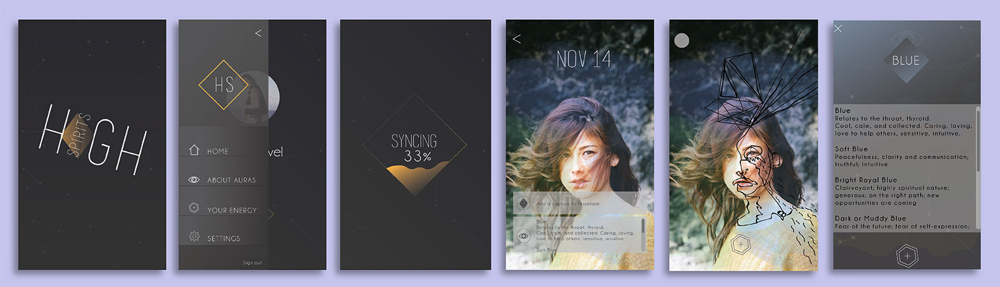

Au•ra
noun | au·ra | \or-ə\
a distinctive atmosphere around a given source; an energy field that is held to emanate from a being
High Spirits is a wearable device designed as jewelry and accompanied by an app. Built into the piece of jewelry is a stack of biosensors that measure skin conductivity, temperature, and humidity. These parameters are collected within the app and translated into colors rendered on top of a selfie. This device is inspired by the Nikola Tesla’s experiments on energy discharge and Semyon Kirlian’s camera that measured this phenomenon.
This concept is very much inspired by metaphysics, New Age sensibilities, and a fascination with all things unseen– including auras! Are they real or not? If energy exists, why can’t it have color?
Aura cameras already exist in niche events and trade shows but it requires a huge set up. High Spirits was created to be handy, beautiful and wearable and to use our own unique energy as artistic expression.
Whether if it creates a real curiosity in auras and our potential, or used merely as beautiful photographs, High Spirits exists to expand and ignite ideas.
(Photo credit: Christina Lonsdale of Radiant Human)

Pioneers if the bio-electromagnetic phenomenon include Nikola Tesla and Semyon Kirlian. Kirlian was very much inspired by the beginning exploration of Tesla in the world of bio-electromagnetic frequencies that he was able to develop a camera that photographs the phenomenon.
The process entails placing sheet photographic film on top of a metal discharge plate. The object to be photographed is then placed directly on top of the film. High voltage is momentarily applied to the metal plate, thus creating an exposure. The corona discharge between the object and the high voltage plate is then captured by the film.
Guy Coggins of Aura Imaging (Redwood City, CA) developed a working polaroid camera that is attached to a hand sensor with a metal hand plate of which the subject places their hand on. This allows the sensors to measure the subjects biofeedback (deviations, skin resistance, humidity of skin, temperature and bioelectricity). These data parameters are then projected as a radiant, colored aura field around the body on a polaroid film.
Hiding the sensors and wirings is a priority when thinking about design. I make jewelry using crystals so I want to utilize my method in making this wearable. The crystal will be useful in camouflaging whatever is needed, and the resin and metal I use provides good housing for my sensors.
Age: 28-38yo
Location: San Francisco, CA
Gender: F
Income Level: 50,000 and above
Occupation: Design, Health & Wellness, Small Business Owner
Consumer Attitude: Avoids impulse purchases, environmentaly-conscious buyer, buys products that are local or organic
Consumer Values: Believes in locally made products and organic products, supports local farmers and artists/small business owners, avoids purchasing things harmful for environment or will cause clutter, believes that less is more, supports local causes, believes in meaningful purchases
Lifestyle/Interests: Yoga, meditation, camping, hiking, family time, weekend getaways, self-healing/help, supports/volounteers for a cause, collecting art and locally-made products
Tech: owns a smartphone, less apps is more, believes in apps that help lifestlye or contributes to everyday living
Name: Katie
Age: 35yo
Location: Nopa, San Francisco
Gender: F
Income Level: 60,000
Occupation: Clinical Psychologist
Hobbies/Interests: yoga, hiking, volunteers at a hospice and grief counseling for young children, sells vintage/thrifted pieces online, attends women empowerment circles, daily meditation, art enthusiast
Tech: not an early-adopter but still an engaged user, strong social media presence, health apps and fitbits
Problem: How do you take a aura photo of yourself using High Spirits?
Hypothesis: By putting the wearable on, syncing it with the app and taking a selfie.
Testing Method: Paper prototype and wearable replica
Conclusion: The ‘Sync Device’ option needs to be visible as soon as the app launches for users to understand it as the first step
The first iteration of High Spirits, in retrospect, is complicated and too busy. I was also not set on the color palette and later on decided that orange was too off-tangent to the concept.
(Click on the image to view)
{kind=link}
{kind=link}
{kind=link}
{kind=link}
{kind=link}
{kind=link}
{kind=link}
{kind=link}
{kind=link}
{kind=link}
{kind=link}
{kind=link}
{kind=link}
{kind=link}
{kind=link}
{kind=link}